Un nuevo universo
De la bóveda celeste que gira sobre nuestras cabezas a la mecánica de Newton: dos milenios de modelos del cosmos, empujados por un problema de ingeniería observacional — las estrellas paseadoras que a veces caminan en reversa.
Si miras el cielo una noche completa, verás que toda la bóveda estrellada rota en bloque, como si fuera una esfera rígida girando en torno a un eje. Pero unos pocos puntos brillantes no respetan ese patrón: se pasean entre las constelaciones y, de vez en cuando, retroceden. Los griegos los llamaron planētēs — «paseadores», «errantes». Explicar ese movimiento anómalo tomó dos mil años y obligó a cambiar de modelo varias veces: esferas concéntricas, epiciclos, heliocentrismo, elipses y finalmente una ley de fuerza universal. Esta clase recorre esa cadena — Aristóteles, Aristarco, Ptolomeo, Copérnico, Bruno, Tycho, Galileo, Kepler, Newton — como lo que realmente fue: un ciclo iterativo de modelo → predicción → dato → revisión, la misma lógica con que hoy depuramos cualquier sistema.
La bóveda celeste en rotación
¿Dónde estamos? La primera respuesta viene de mirar el cielo con paciencia.
La pregunta que abre la clase es ¿dónde estamos? Sin telescopios ni satélites, la única fuente de datos es el cielo nocturno. Y la primera observación robusta que cualquier civilización puede hacer es que las estrellas no se mueven unas respecto de otras: las constelaciones mantienen su forma, pero el conjunto completo gira durante la noche en torno a un punto fijo (el polo celeste). Una fotografía de larga exposición lo muestra sin ambigüedad: cada estrella dibuja un arco de círculo concéntrico.
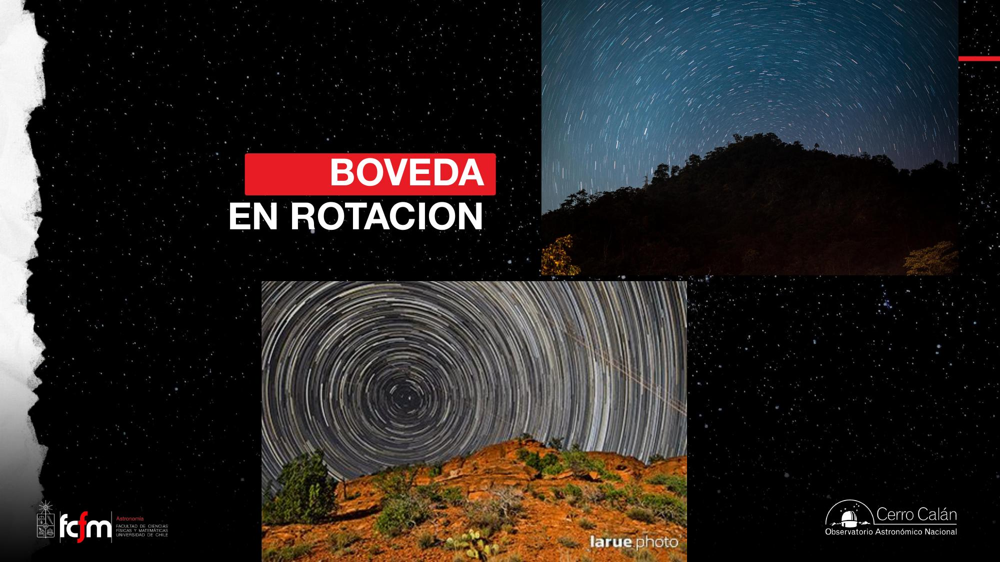
De ahí nace el modelo más antiguo y natural: la bóveda (o esfera) celeste, una esfera gigante con las estrellas «pegadas» que gira alrededor de la Tierra una vez al día. Sobre esa esfera se definen los elementos de referencia que la astronomía sigue usando: el ecuador celeste (proyección del ecuador terrestre), la eclíptica (el camino anual del Sol entre las estrellas) y el equinoccio vernal (uno de los dos puntos donde ambas se cruzan).
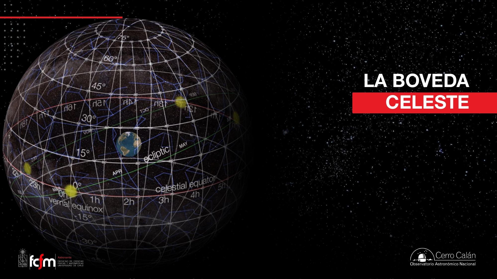
La esfera celeste es un marco de referencia, no una afirmación física. Es exactamente lo que hace un ingeniero al elegir coordenadas cómodas para un problema: para apuntar un telescopio (o una antena) no importa la distancia a la estrella, solo su dirección, y dos ángulos sobre una esfera unitaria bastan. El modelo «falso» sobrevivió como sistema de coordenadas porque resuelve bien ese problema de interfaz.
Estrellas paseadoras: nace la palabra «planeta»
Cinco puntos de luz que no respetan el patrón de la bóveda rígida.
Sobre el fondo de estrellas «fijas» hay cinco objetos brillantes visibles a ojo desnudo — Mercurio, Venus, Marte, Júpiter y Saturno — que cambian de posición de noche en noche respecto a las constelaciones. Los griegos los llamaron estrellas paseadoras:
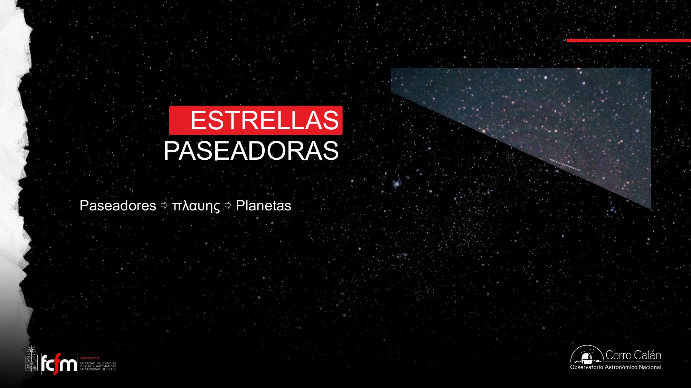
En el modelo antiguo, la solución fue darle a cada paseador su propia esfera: capas concéntricas anidadas alrededor de la Tierra, cada una girando a su propio ritmo — Luna, Mercurio, Venus, Sol, Marte, Júpiter, Saturno y, al final, la esfera de las estrellas fijas.
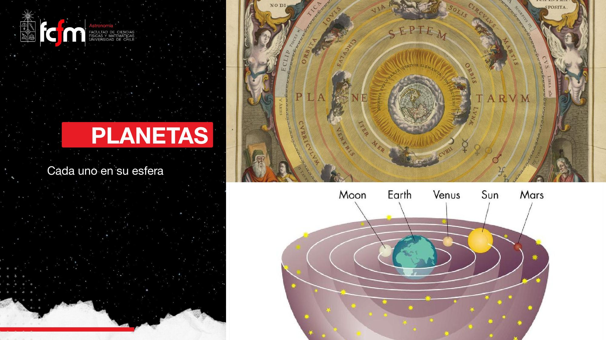
Nota lo razonable del modelo: si el cielo parece una esfera que gira y unos pocos objetos se desvían suavemente, la corrección mínima es agregar esferas adicionales con velocidades propias. Es el equivalente antiguo de agregar términos a un modelo para absorber residuos. El problema aparece cuando los residuos tienen estructura que ningún término «razonable» captura.
El problema: la retrogradación
A veces los paseadores caminan en reversa. Ese residuo mató al modelo simple.
Si sigues a Marte durante meses, ves que avanza hacia el este entre las estrellas... hasta que frena, retrocede hacia el oeste durante unas semanas y luego retoma su marcha, dibujando un lazo en el cielo. Es el movimiento retrógrado, y es un dato durísimo para cualquier modelo de esferas que giran de manera uniforme: una esfera rígida no puede hacer que un punto pegado a ella retroceda.
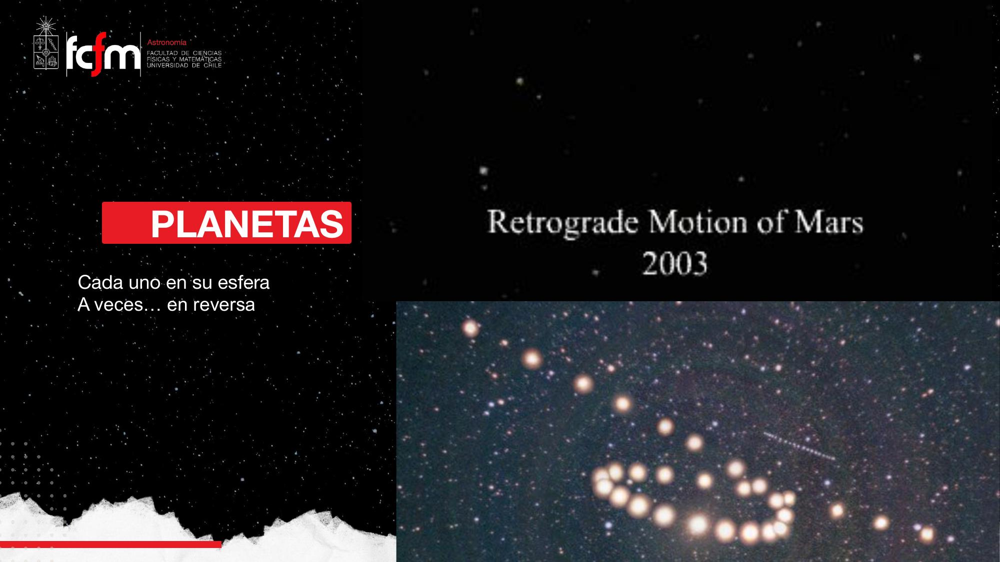
Hoy sabemos que la retrogradación es un efecto de paralaje dinámico: la Tierra, más rápida en su órbita interior, «adelanta» a Marte como un auto que sobrepasa a otro en la carretera — visto desde el auto rápido, el lento parece ir hacia atrás contra el paisaje lejano. No hace falta que Marte retroceda: basta con que nosotros nos movamos. El widget siguiente lo muestra en vivo.
La retrogradación es un problema de marco de referencia: la señal medida (dirección aparente) es la composición de dos movimientos, el del objeto y el del sensor. Igual que el Doppler visto desde una plataforma móvil, si olvidas restar el movimiento propio del observador, el dato parece absurdo. Geocentrismo = intentar modelar la señal sin corregir el movimiento del sensor.
Modelo geocéntrico: esferas, epiciclos y el Almagesto
El parche que funcionó 1400 años: círculos sobre círculos.
El modelo geocéntrico se consolida en la Antigua Grecia: Anaximandro y Filolao proponen las primeras cosmologías, y Platón y Aristóteles (~400 a.C.) fijan el dogma: la Tierra es una esfera inmóvil en el centro del universo. No era terquedad: había argumentos observacionales a favor.
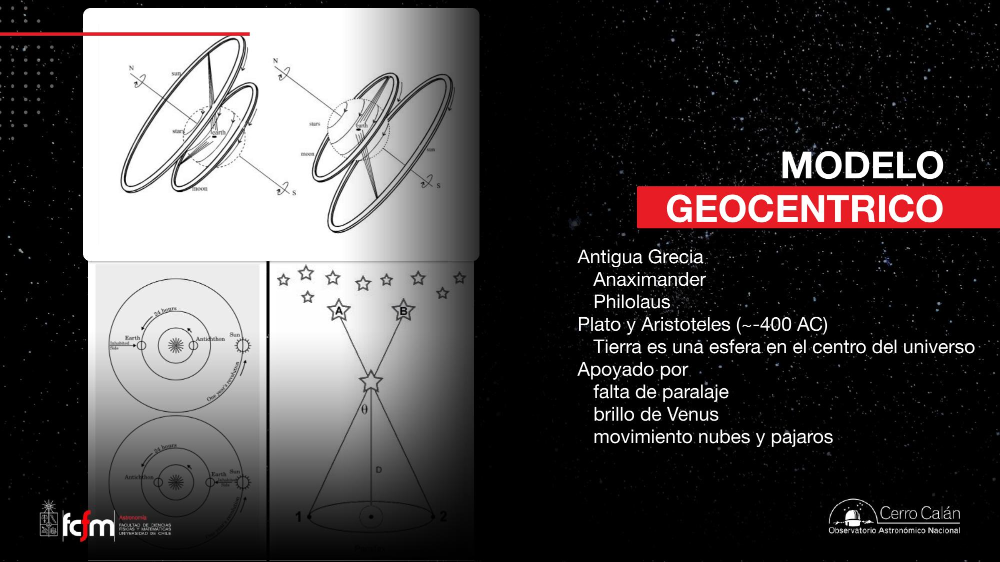
Los tres argumentos pro-geocentrismo
- Falta de paralaje: si la Tierra orbitara el Sol, las estrellas cercanas deberían desplazarse aparentemente respecto de las lejanas a lo largo del año. Nadie lo medía. La explicación correcta — las estrellas están absurdamente lejos y el paralaje es de fracciones de segundo de arco — recién se confirmó en 1838.
- Brillo de Venus: en un modelo heliocéntrico simple la distancia Tierra–Venus varía muchísimo, y se esperaba un cambio de brillo enorme que no se observaba a ojo desnudo (la resolución del enigma requiere las fases, invisibles sin telescopio).
- Nubes y pájaros: si la Tierra rotara, ¿por qué lo que flota en el aire no se queda atrás? Faltaban dos mil años para el concepto de inercia y de arrastre del aire con la superficie.
El punto de la clase no es burlarse del geocentrismo, sino mostrar que fue una teoría científica razonable para sus datos: hacía predicciones, se contrastaba con observaciones y sus rivales fallaban tests observacionales (¡el paralaje!). El heliocentrismo de Aristarco no perdió por censura, sino por parecer menos compatible con los datos disponibles.
Para acomodar la retrogradación, el geocentrismo adopta los epiciclos: cada planeta gira en un círculo pequeño (epiciclo) cuyo centro viaja sobre un círculo mayor centrado en la Tierra (deferente). La combinación de ambos giros reproduce los lazos retrógrados.
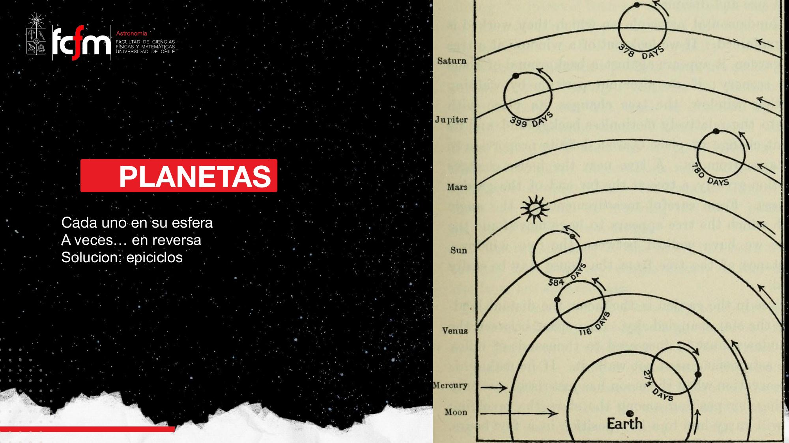
La versión definitiva la escribe Ptolomeo (siglo II) en el Almagesto («el más grande»), el tratado astronómico más influyente de la historia: epiciclos, deferentes y esferas des-centradas (la Tierra ligeramente fuera del centro) que ajustaban las observaciones con precisión notable para la época.
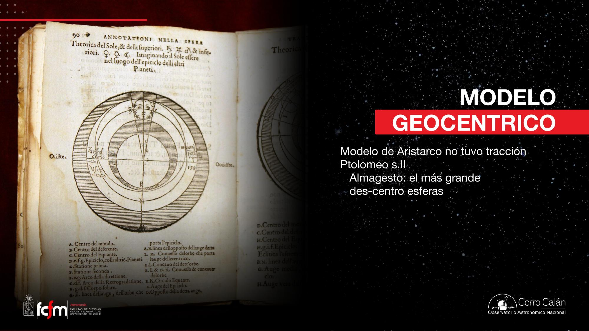
Un sistema de epiciclos es literalmente una serie de Fourier geométrica: sumar círculos que giran a distintas frecuencias permite aproximar casi cualquier trayectoria periódica con precisión arbitraria. Por eso el modelo ptolemaico «funcionaba»: era un ajuste con suficientes grados de libertad, no una explicación. Moraleja de modelamiento: ajustar bien no es entender — un modelo sobreparametrizado predice sin explicar y colapsa fuera de su dominio de calibración.
Aristarco: el heliocentrismo que no prendió
Siglo III a.C.: geometría, eclipses y una conclusión demasiado adelantada.
Aristarco de Samos (~300 a.C.) hizo algo muy moderno: usar geometría y mediciones para estimar tamaños y distancias del sistema Tierra–Luna–Sol, y sacar la conclusión que la física sugería aunque incomodara:
- Con las fases de la Luna: cuando vemos la Luna exactamente medio iluminada (cuarto), el triángulo Sol–Luna–Tierra tiene un ángulo recto en la Luna. Midiendo el ángulo Luna–Tierra–Sol se despeja la razón de distancias. Aristarco obtuvo que el Sol está ~19 veces más lejos que la Luna.
- Con los eclipses lunares: cronometrando el paso de la Luna por la sombra de la Tierra, estimó que la Tierra es ~3 veces el tamaño de la Luna.
- Consecuencia: como Sol y Luna se ven del mismo tamaño angular pero el Sol está 19× más lejos, el Sol debe ser 19× más grande que la Luna — mucho mayor que la Tierra. ¿Y lo enorme orbita a lo pequeño? Más natural que la Tierra orbite al Sol. Y si no vemos paralaje estelar, es porque el universo es mucho más grande de lo asumido.
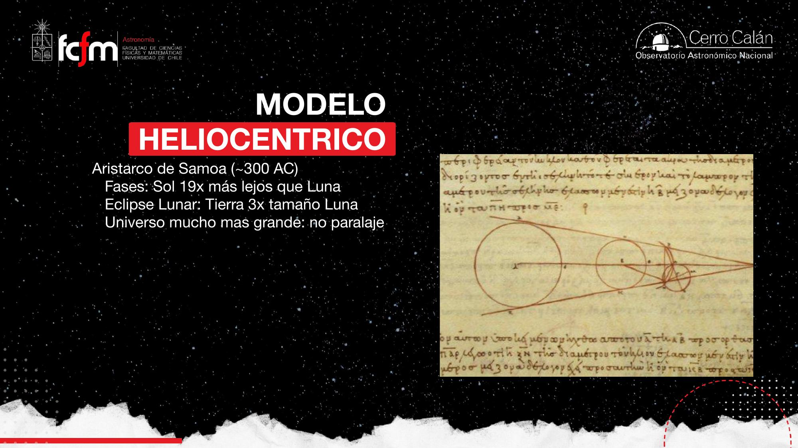
Derivando, : cerca de 90° la sensibilidad diverge. Con θ = 87° un error de apenas 3° cambia el resultado de 19× a 390×: un factor 20 de error con un instrumento «casi correcto». Es el caso clásico de mal condicionamiento: el diseño del experimento amplifica el ruido del sensor. Aristarco no midió mal por descuido — eligió (sin saberlo) un observable numéricamente hostil.
Pese a su elegancia, el modelo de Aristarco no tuvo tracción: chocaba con la falta de paralaje, con la física aristotélica y con el sentido común. El geocentrismo de Ptolomeo se quedó con el trono por 1400 años.
Copérnico y el costo de cambiar de modelo
Un canónigo polaco resucita el heliocentrismo; Bruno paga el precio de extrapolarlo.
Nicolás Copérnico (1473–1543), canónigo católico, replantea el heliocentrismo con un argumento de simplicidad: poner el Sol al centro elimina la maquinaria de epiciclos mayores y explica la retrogradación de forma natural (es la Tierra la que adelanta). Su libro, De Revolutionibus Orbium Coelestium, se publica en 1543, mientras Copérnico moría — prudencia editorial ante un clima teológico hostil.
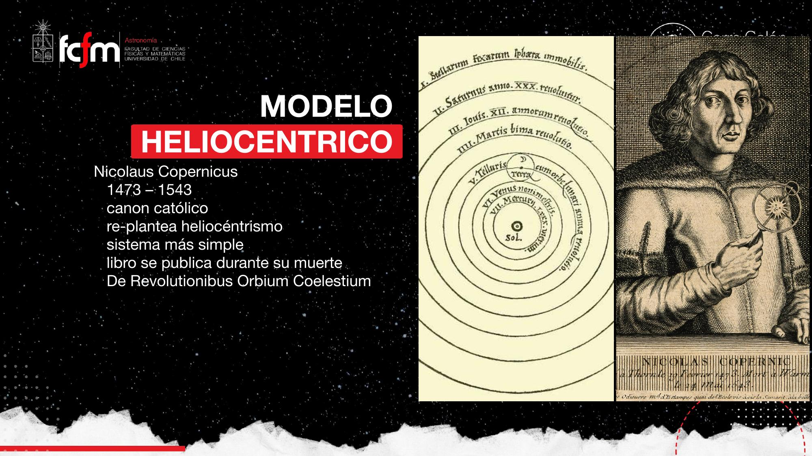
El Copérnico circular no era más preciso que Ptolomeo para predecir posiciones: al insistir en círculos perfectos, también necesitaba correcciones. Su ventaja era estructural (menos mecanismos ad hoc, orden natural de los planetas por período). La precisión llegaría con las elipses de Kepler. Distinguir simplicidad estructural de error de ajuste es una lección de selección de modelos aún vigente.
El contexto era peligroso: la disputa entre católicos y protestantes y la Inquisición hacían costoso desafiar la cosmología oficial. El caso extremo es Giordano Bruno (1548–1600), que fue más allá del heliocentrismo: propuso que las estrellas son soles con sus propios mundos y que podría existir vida extraterrestre. Fue quemado en la hoguera en 1600 (por un conjunto de herejías teológicas, entre las cuales estaba su cosmología).
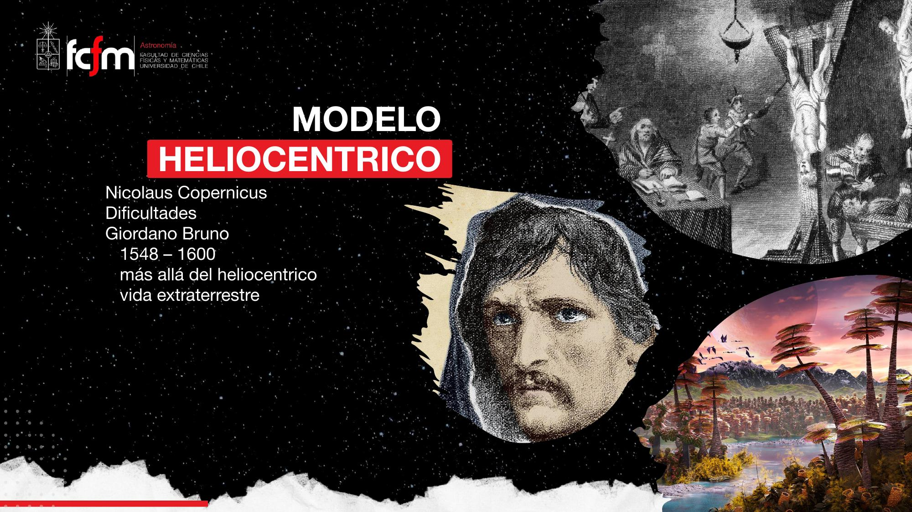
Tycho y Galileo: mejores datos, nuevo instrumento
Sin datos de calidad no hay modelo que avance; sin telescopio no hay datos nuevos.
Tycho Brahe (1546–1601): la máquina de medir
Tycho no aceptó ni Ptolomeo ni Copérnico: propuso un modelo geo-heliocéntrico (los planetas orbitan al Sol, y el Sol orbita a la Tierra), compatible con la falta de paralaje. Su aporte imperecedero fue otro: mejorar radicalmente la calidad de las observaciones, con instrumentos gigantes de medición angular (pre-telescopio) y décadas de registros sistemáticos — la base de datos que Kepler explotaría.
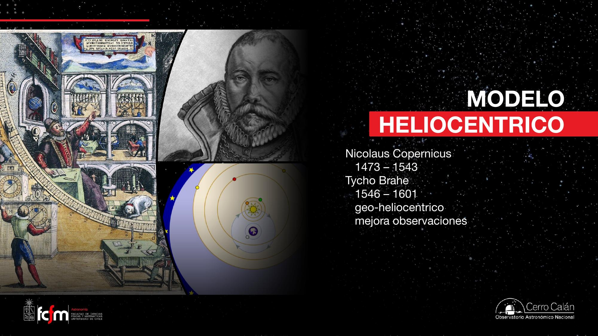
Galileo Galilei (1564–1642): el telescopio cambia el juego
Galileo fue el primero en usar el telescopio para la astronomía, y con él encontró lo que la clase llama pruebas heliocéntricas infalibles:
- Las fases de Venus: Venus muestra el ciclo completo de fases (como la Luna) y su tamaño aparente cambia de forma correlacionada. Eso solo es geométricamente posible si Venus orbita al Sol, no a la Tierra. Además resuelve el viejo enigma del brillo: fase y distancia se compensan.
- Las lunas de Júpiter: cuatro puntos que noche a noche cambian de posición alrededor de Júpiter. Demostración directa de que existen centros de órbita distintos de la Tierra.
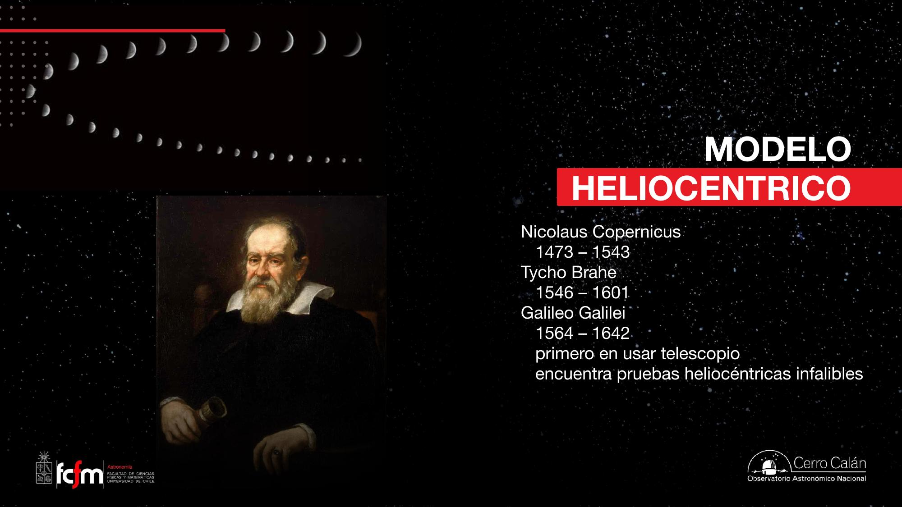
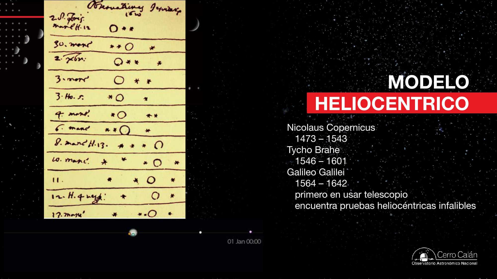
Galileo además desarrolla los comienzos de la mecánica: planos inclinados (caída y aceleración), y el principio de relatividad — dentro de un barco que navega a velocidad constante, una piedra que cae del mástil cae al pie del mástil, no «atrás». Con eso desmonta el argumento geocéntrico de las nubes y los pájaros: todo lo que comparte el movimiento de la Tierra se mueve con ella.
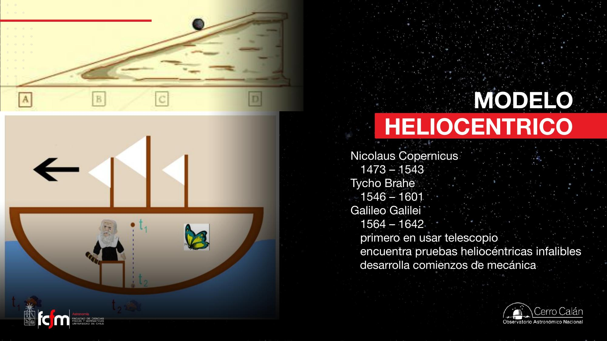
El telescopio es un caso de libro de mejora de SNR y resolución del sensor habilitando ciencia nueva: las fases de Venus y las lunas de Júpiter siempre estuvieron ahí, bajo el umbral de detección del ojo (resolución angular ~1 minuto de arco). Cada salto instrumental posterior (fotografía, CCD, óptica adaptativa, interferometría) repitió el mismo patrón: datos nuevos → modelos nuevos.
Kepler: las tres leyes del movimiento planetario
Del dato a la ley empírica: elipses, áreas y la relación período–distancia.
Johannes Kepler (1571–1630), astrónomo (y astrólogo) teórico, hereda los datos de Tycho y hace lo que hoy llamaríamos ajuste de modelos: tras años de pelear con la órbita de Marte, abandona el círculo — sagrado desde los griegos — y formula el modelo matemático que funciona:
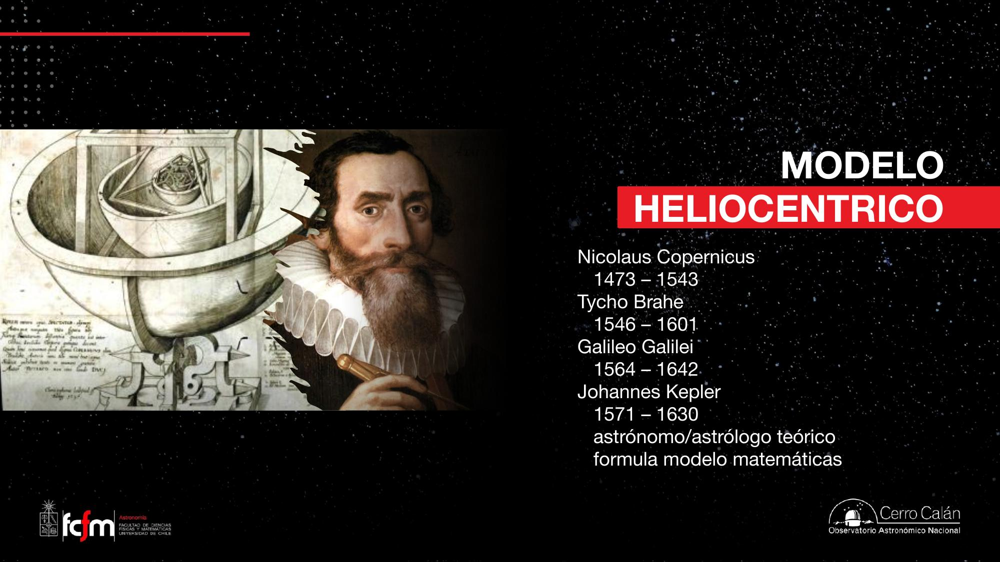
- 1.ª ley: los planetas orbitan en elipses, con el Sol en uno de los focos.
- 2.ª ley: el radio Sol–planeta barre áreas iguales en tiempos iguales — el planeta acelera cerca del Sol (perihelio) y frena lejos (afelio). Es, en lenguaje moderno, conservación del momento angular.
- 3.ª ley: con en años y en unidades astronómicas: el cuadrado del período es proporcional al cubo de la distancia media.
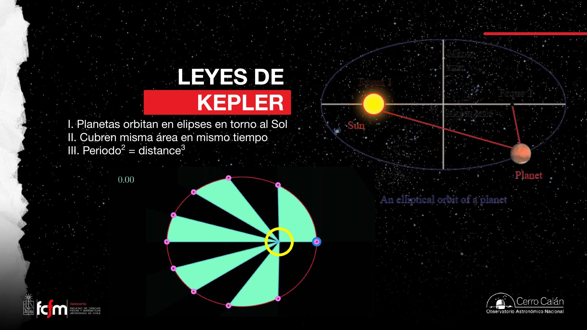
Newton: la mecánica celeste
De tres leyes empíricas a una sola causa: la gravitación universal.
Isaac Newton (1642–1726) — nacido el año en que muere Galileo — cierra el arco de la clase. Para explicar el movimiento planetario tuvo que construir las herramientas desde cero:
- Desarrolla el cálculo (derivadas e integrales): el lenguaje matemático del cambio continuo.
- Cimenta la mecánica clásica: , formalizando la inercia que Galileo había intuido.
- Plantea la fuerza de gravedad universal: la misma causa para la manzana que cae y la Luna que orbita.
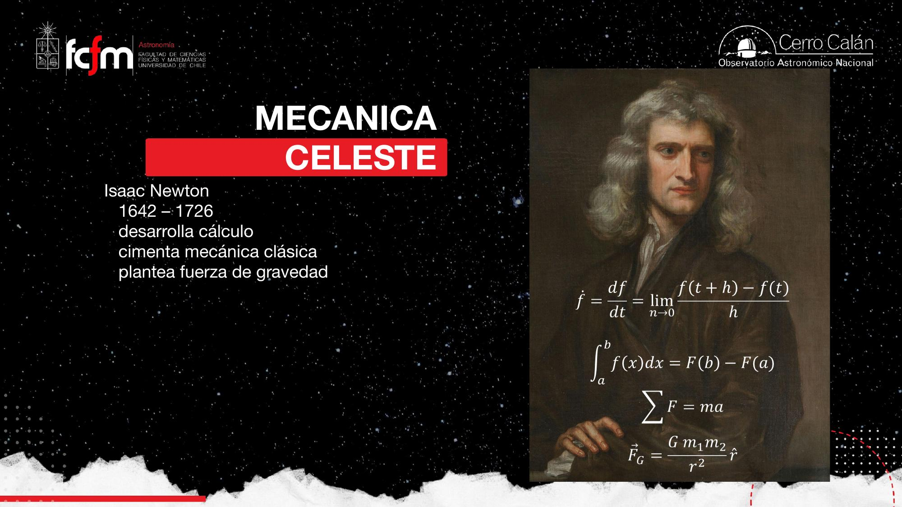
Con Newton el cielo deja de ser un reino aparte con reglas propias (esferas perfectas, círculos sagrados) y pasa a ser el mismo sistema físico que el laboratorio: una sola ley, válida en todas partes, con capacidad predictiva (mareas, cometas, y siglos después, el descubrimiento de Neptuno «con lápiz y papel»). Ese es el nuevo universo del título: uno calculable.
La secuencia de la clase — observación a ojo desnudo → modelo geocéntrico → crisis por retrogradación → heliocentrismo → leyes empíricas → ley dinámica — es el molde del resto del curso: el Módulo I explora el Sistema Solar que esta historia reveló, y los módulos siguientes aplican exactamente esta mecánica (Kepler + Newton) para detectar y pesar planetas alrededor de otras estrellas.
Bibliografía complementaria sugerida en clase
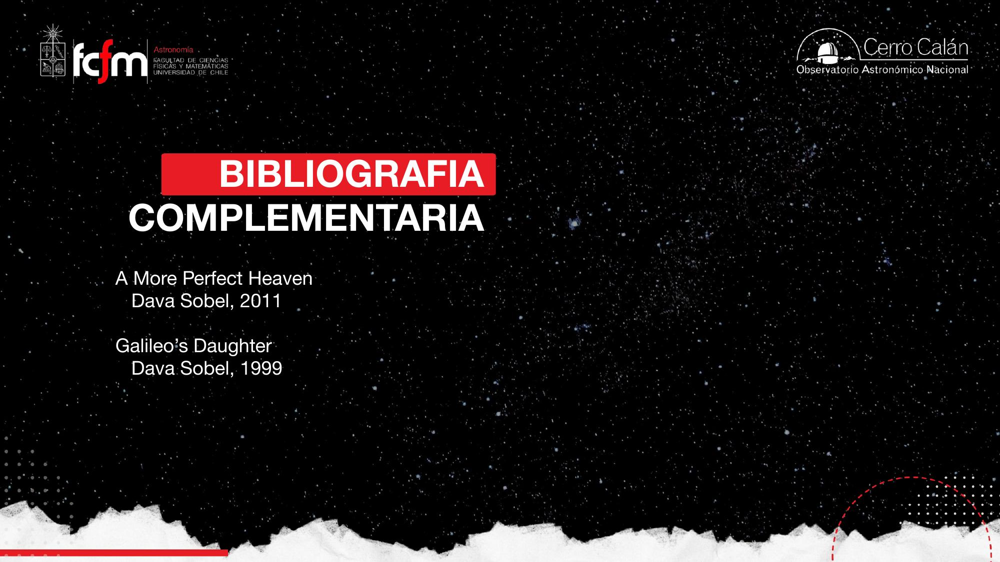
Para profundizar con un texto introductorio y gratuito: capítulo 2, Observing the Sky: The Birth of Astronomy (esfera celeste, astronomía antigua, nacimiento de la astronomía moderna) y capítulo 3, Orbits and Gravity (leyes de Kepler, síntesis de Newton). De Fraknoi, Morrison y Wolff, Astronomy 2e, OpenStax, Rice University, 2022 — licencia CC BY-NC-SA 4.0.
Conceptos clave
Tabla de repaso rápido.
| Concepto | Qué es | Por qué importa |
|---|---|---|
| Bóveda celeste | Esfera aparente que rota en bloque con las estrellas fijas | Primer modelo del cosmos; sobrevive como sistema de coordenadas (ecuador celeste, eclíptica, equinoccio vernal) |
| Planeta (planētēs) | «Paseador» / «errante»: astro que se mueve entre las estrellas fijas | Los 5 visibles a ojo desnudo son la anomalía que motiva toda la historia |
| Retrogradación | Lazo aparente hacia el oeste en la trayectoria de un planeta | El «residuo» que ningún modelo de esferas simples explicaba; hoy: efecto del sobrepaso orbital de la Tierra |
| Epiciclo y deferente | Círculo pequeño girando sobre un círculo mayor centrado en la Tierra | Parche ptolemaico que reproduce la retrogradación; análogo geométrico de una serie de Fourier |
| Modelo geocéntrico | Tierra esférica e inmóvil al centro (Platón, Aristóteles, Ptolomeo — Almagesto, s. II) | Dominó ~1400 años apoyado en evidencia: sin paralaje, brillo de Venus, nubes y pájaros |
| Aristarco de Samos | Heliocentrismo temprano (~300 a.C.); Sol 19× más lejos que la Luna, Tierra 3× la Luna | Método geométrico correcto, medición mal condicionada; «no tuvo tracción» |
| Paralaje estelar | Cambio aparente de posición de una estrella por el movimiento de la Tierra | Su ausencia aparente fue el gran argumento anti-heliocéntrico; implica un universo enorme |
| Copérnico | De Revolutionibus (1543): Sol al centro, sistema más simple | Explica la retrogradación sin epiciclos mayores; publicado a su muerte por el clima teológico |
| Giordano Bruno | 1548–1600; estrellas = soles, pluralidad de mundos, vida extraterrestre | Extrapolación visionaria del heliocentrismo; ejecutado en 1600 |
| Tycho Brahe | 1546–1601; modelo geo-heliocéntrico y observaciones de precisión récord | Sus datos de décadas son el insumo de Kepler |
| Galileo | 1564–1642; primero en usar telescopio; fases de Venus, lunas de Júpiter, inicios de la mecánica | «Pruebas heliocéntricas infalibles» + inercia que derriba el argumento de nubes y pájaros |
| Leyes de Kepler | I: elipses con el Sol en un foco · II: áreas iguales en tiempos iguales · III: | Leyes empíricas exactas del movimiento planetario; base de toda la detección de exoplanetas |
| Newton | 1642–1726; cálculo, , gravitación universal | Deduce las leyes de Kepler de una sola causa: el universo se vuelve calculable |
Exámenes de práctica
10 exámenes de 5 preguntas (3 de alternativas autocorregibles + 2 de respuesta escrita).